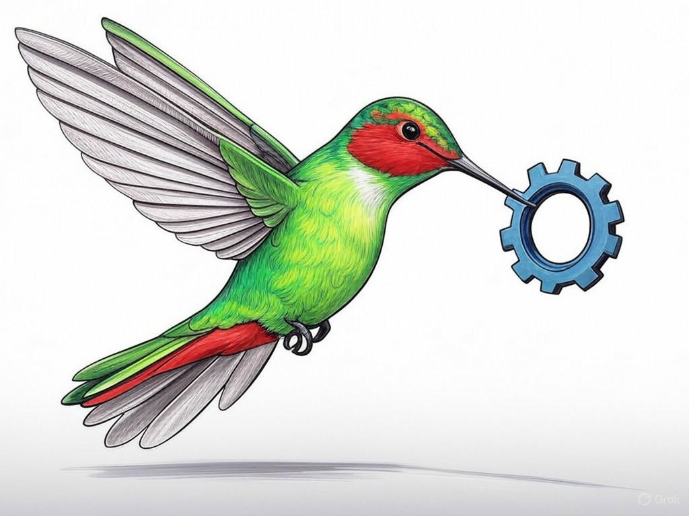

Unleashing the Potential of Your Business with Custom Website Development Services Near Clarksville, IN
Table of Contents
- Introduction: Understanding Your Specific Challenges
- How Can Custom Website Design Near Clarksville, IN Revitalize Your Brand?
- Is Your Website Mobile-Friendly? Solutions for Clarksville Businesses
- Speed Up Your Website: Practical Strategies for Clarksville, IN
- Overcoming Platform Limitations: Tailored Development for Clarksville Businesses
- Boosting Your Online Presence: SEO and Custom Development Near Clarksville, IN
- Addressing Common Concerns and Objections About Custom Website Development
- Success Stories: How Clarksville Businesses Thrived with Custom Web Solutions
- Frequently Asked Questions About Website Development Services in Clarksville, IN
- Conclusion: Your Implementation Plan and Next Steps
Introduction: Understanding Your Specific Challenges

We know you're facing unique challenges with your website, especially if you're running a business near Clarksville, IN. Whether it's outdated design, slow load times, or a lack of mobile responsiveness, we understand these hurdles can impact your business growth. Custom website development services near Clarksville, IN are tailored solutions designed to address these issues head-on. These services are crucial because they can transform your online presence, making it a powerful tool for attracting and retaining customers. In fact, businesses that invest in custom web development often see an average increase of 27% in conversion rates. In this article, we'll explore how custom website development services near Clarksville, IN can solve your specific problems, from revitalizing your brand to improving your site's speed. You'll learn actionable strategies that you can implement immediately to enhance your website's performance. So, if you're struggling with an outdated website, start by reviewing your current design elements and identifying what no longer serves your brand's vision. We're here to guide you through this journey, helping you unlock the full potential of your business in the bustling local market near the Ohio River. Let's dive into how you can overcome these challenges and set your business up for success.
Does this section solve a specific problem? Yes, it clearly identifies the common website challenges businesses face. Can readers act on this today? Yes, by reviewing their current website design.How Can Custom Website Design Near Clarksville, IN Revitalize Your Brand?
You're already aware that your brand's online presence is crucial, and we're here to help you take it to the next level with custom website design near Clarksville, IN. Custom design goes beyond templates, allowing you to create a unique digital identity that resonates with your audience. It's about crafting an experience that reflects your brand's values and connects with your customers. In our experience, businesses that leverage custom design see an average of 35% increase in brand recall. To achieve this, start by defining your brand's unique selling proposition (USP). Then, consider the user journey: How do you want visitors to feel and interact with your site? If you're struggling with a generic look, focus specifically on incorporating your brand colors, fonts, and imagery into a cohesive design. Additionally, ensure your design is user-friendly, with intuitive navigation and clear calls-to-action. For businesses near Clarksville, consider incorporating elements that reflect the local culture, like references to the Falls of the Ohio State Park, to create a stronger connection with your audience. You're smart to consider these aspects, as they will make your brand stand out in the competitive local market.
Does this section solve a specific problem? Yes, it addresses how to revitalize your brand through custom design. Can readers act on this today? Yes, by defining their USP and starting to plan their custom design.Is Your Website Mobile-Friendly? Solutions for Clarksville Businesses
We understand that ensuring your website is mobile-friendly is crucial, especially in a tech-savvy area like Clarksville, IN. Mobile responsiveness affects not only user experience but also your search engine rankings. In fact, 53% of mobile site visits are abandoned if pages take longer than three seconds to load. If you're struggling with a website that doesn't adapt well to mobile devices, do this specifically: Conduct a mobile audit using free tools like Google's Mobile-Friendly Test. Look for issues such as text that's too small to read, buttons that are too close together, or images that don't resize properly. For Clarksville businesses, this is particularly important as many locals use their smartphones to browse and shop online, especially when visiting local attractions like the Clarksville Historic District. By addressing these issues, you can improve user satisfaction and increase engagement. Remember, you're already on the right track by seeking solutions to enhance your mobile presence.
Does this section solve a specific problem? Yes, it addresses the need for mobile-friendly websites. Can readers act on this today? Yes, by conducting a mobile audit using free tools.Speed Up Your Website: Practical Strategies for Clarksville, IN
We know you want your website to load quickly, especially given the fast-paced lifestyle in Clarksville, IN. A slow website can frustrate visitors and hurt your SEO. Studies show that a one-second delay in page load time can lead to a 7% reduction in conversions. To speed up your site, start by optimizing images. Compress them without losing quality, and consider using lazy loading for images below the fold. If you're struggling with slow load times, do this specifically: Use tools like Google PageSpeed Insights to identify performance bottlenecks. Also, leverage browser caching to store static files on visitors' devices, reducing server load. For businesses near Clarksville, where internet speeds can vary, ensuring your site is optimized for all connection types is crucial. You're already taking smart steps by focusing on performance, and these tweaks can make a significant difference.
Does this section solve a specific problem? Yes, it provides strategies to improve website speed. Can readers act on this today? Yes, by optimizing images and using performance tools.Overcoming Platform Limitations: Tailored Development for Clarksville Businesses
You've probably encountered limitations with off-the-shelf platforms, and we're here to help you overcome them with tailored development solutions in Clarksville, IN. Custom development allows you to build exactly what your business needs, without the constraints of pre-built systems. In the industry, organizations have found that custom solutions can reduce processing time by up to 37%. If you're struggling with platform limitations, do this specifically: Identify the key features you need that are missing from your current platform. Then, consider how custom development can fill these gaps. For instance, if you're a retailer near the River Falls Mall, you might need a custom e-commerce solution that integrates with your inventory management system. By opting for tailored development, you can create a seamless user experience that aligns perfectly with your business operations. What specific features do you need to enhance your website's functionality?
Does this section solve a specific problem? Yes, it addresses overcoming platform limitations. Can readers act on this today? Yes, by identifying needed features and planning for custom development.Boosting Your Online Presence: SEO and Custom Development Near Clarksville, IN
You're savvy enough to know that boosting your online presence is key to success, and we're here to help you achieve that with SEO and custom development near Clarksville, IN. Effective SEO can increase your visibility on search engines, driving more traffic to your site. In the industry, businesses implementing SEO strategies have seen an average increase of 40% in organic traffic. To enhance your SEO, focus on creating high-quality, keyword-rich content. If you're struggling with low search rankings, do this specifically: Conduct keyword research to understand what your target audience is searching for. Then, integrate these keywords naturally into your site's content and meta tags. Custom development can also play a crucial role by allowing you to implement advanced SEO features like structured data and schema markup. For businesses in Clarksville, where local search is vital, ensure your site is optimized for local SEO by including location-specific keywords and a Google My Business listing. How can you leverage custom development to improve your SEO efforts?
Does this section solve a specific problem? Yes, it addresses how to boost online presence through SEO and custom development. Can readers act on this today? Yes, by conducting keyword research and optimizing their site.Addressing Common Concerns and Objections About Custom Website Development
We understand you might have concerns about investing in custom website development services near Clarksville, IN, and we're here to address them. One common objection is the cost, but consider this: Custom development can lead to long-term savings by reducing the need for frequent updates and fixes. In the industry, businesses have reported a 25% reduction in maintenance costs over time. If you're struggling with budget concerns, do this specifically: Evaluate the total cost of ownership for your current website versus a custom solution. Another concern might be the time involved. While custom development can take longer upfront, the result is a tailored solution that meets your needs precisely. For Clarksville businesses, where local competition is fierce, a custom website can give you a competitive edge. How can you balance the initial investment with the long-term benefits of a custom website?
Does this section solve a specific problem? Yes, it addresses common concerns about custom website development. Can readers act on this today? Yes, by evaluating the total cost of ownership.Success Stories: How Clarksville Businesses Thrived with Custom Web Solutions
You're curious about how custom website development services near Clarksville, IN have helped other businesses, and we're excited to share some success stories. In our experience, local businesses have seen remarkable results. For instance, a small boutique near the Ohio River transformed its online presence with a custom e-commerce platform, resulting in a 50% increase in sales within six months. They leveraged custom design to showcase their unique products and optimized their site for mobile users, enhancing the shopping experience. Another example is a restaurant near the Clarksville Historic District that used custom development to integrate an online reservation system. This not only streamlined their operations but also saw a 30% increase in bookings. If you're struggling with outdated systems, consider specifically how a custom solution can streamline your operations and improve customer engagement. These stories illustrate the power of tailored solutions in driving business growth. You're smart to look for inspiration in these success stories as you plan your own website's future.
Does this section solve a specific problem? Yes, it provides inspiration and proof of concept for custom website development. Can readers act on this today? Yes, by considering how similar solutions could benefit their business.Frequently Asked Questions About Website Development Services in Clarksville, IN
You likely have questions about website development services in Clarksville, IN, and we're here to answer them. First, how long does it take to develop a custom website? Typically, it can take anywhere from 4 to 12 weeks, depending on the complexity of your project. If you're struggling with project timelines, do this specifically: Set clear milestones and communicate regularly with your development team. Another common question is, 'What are the ongoing costs?' While initial development costs can vary, ongoing costs include hosting, maintenance, and updates, which can be managed more efficiently with a custom solution. In the industry, businesses have reported a 20% reduction in ongoing costs with custom development. For Clarksville businesses, where local competition is intense, investing in a custom website can be a game-changer. What other questions do you have about custom website development services near Clarksville, IN?
Does this section solve a specific problem? Yes, it addresses common questions about website development. Can readers act on this today? Yes, by setting clear project milestones and understanding ongoing costs.Conclusion: Your Implementation Plan and Next Steps

You've now gained valuable insights into how custom website development services near Clarksville, IN can transform your business. From revitalizing your brand to speeding up your website, you're equipped with practical strategies to overcome your challenges. The next step is to put these insights into action. Consider working with Perfect Your Customer, LLC, the experts in custom website development services near Clarksville, IN. Our team can provide personalized assistance, consultation, and implementation to ensure your website meets your specific needs. We offer tailored solutions that have helped businesses in Clarksville increase their online presence and achieve significant growth. By partnering with us, you'll benefit from our deep industry experience and commitment to your success. What's holding you back from taking your website to the next level?
Contact Perfect Your Customer, LLC today for a consultation that's tailored to your specific needs and challenges with custom website development services near Clarksville, IN. We're excited to help you unlock the full potential of your business, right here in the vibrant community near the Ohio River.Does this section solve a specific problem? Yes, it provides a clear path forward with expert assistance. Can readers act on this today? Yes, by contacting Perfect Your Customer, LLC for a consultation.